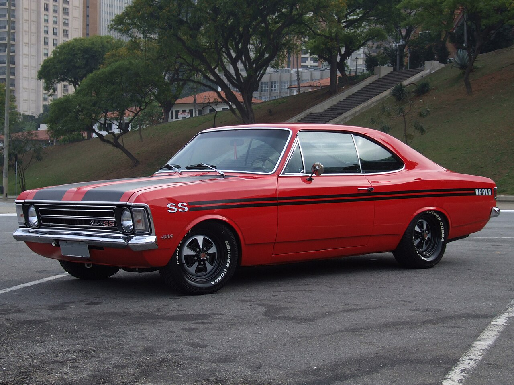

Uma trajetória que marcou o Brasil
O início da história
O Chevrolet Opala chegou ao mercado brasileiro em 1968. Ao longo de sua trajetória, conquistou espaço entre famílias, admiradores de carros esportivos e consumidores que buscavam conforto.
A evolução do modelo
Durante sua produção, o Opala recebeu mudanças no visual, no acabamento e nos equipamentos. Sua história inclui versões como o SS, o Comodoro e o Diplomata.
A família também contou com a Caravan, uma perua que combinava as características da linha com mais espaço para bagagens.
O fim da produção
A produção do Opala terminou em 1992. Mesmo depois de sair de linha, o modelo manteve seu lugar na cultura automobilística brasileira.

Preservação e projetos atuais
A continuidade dessa história acontece por meio dos proprietários e entusiastas. Os projetos atuais são iniciativas de restauração e preparação, e não uma nova geração oficial do veículo.
Restauração
Uma restauração pode buscar recuperar a aparência e o funcionamento do carro, preservando suas características originais.
Personalização
Outros proprietários escolhem adaptar o carro ao próprio gosto, modificando acabamento, rodas, suspensão ou conjunto mecânico.
- Recuperação da pintura e da carroceria.
- Restauração dos bancos e do painel.
- Manutenção e recuperação da mecânica.
- Personalização de componentes.
- Preparação do motor para diferentes objetivos.
Motor aspirado e motor turbo
Preparação aspirada
Um motor aspirado admite ar sem utilizar um turbo ou compressor para pressurizar a admissão. A preparação busca melhorar o desempenho mantendo essa forma de funcionamento.
Um projeto pode envolver mudanças no comando de válvulas, no cabeçote, na admissão e no escapamento, além dos ajustes de alimentação e ignição.
Preparação turbo
O turbo aproveita a energia dos gases do escapamento para movimentar uma turbina ligada a um compressor. Esse compressor envia ar sob pressão para a admissão do motor.
Com mais ar e a quantidade adequada de combustível, é possível aumentar a potência. O resultado depende do conjunto de componentes e dos ajustes do projeto.
Cada projeto tem uma proposta
Tanto um aspirado preparado quanto um turbo podem fazer parte de um projeto bem desenvolvido. A escolha depende do uso desejado, do orçamento e das características do veículo.
Uma preparação envolve o carro inteiro: freios, pneus, suspensão e transmissão também precisam ser compatíveis com a proposta.
Conheça mais sobre a história
Assista ao vídeo sobre a trajetória do Opala e sua evolução ao longo dos anos.